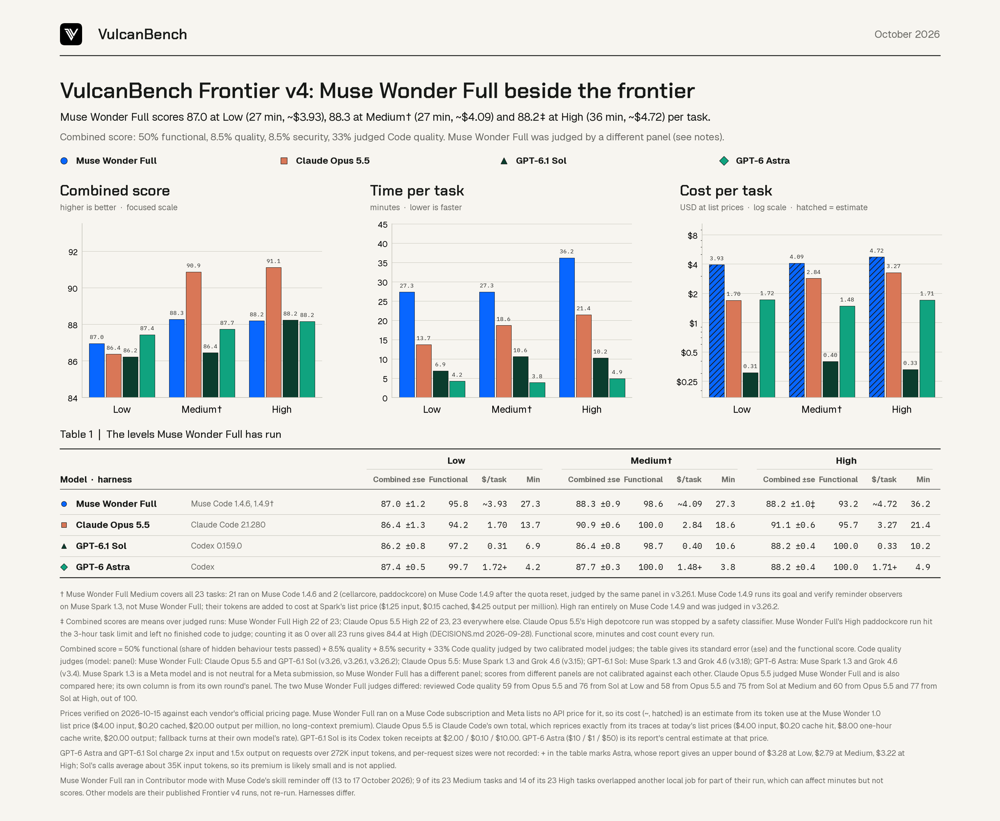

With its code now judged, Muse Wonder Full scores 87.0 on the combined score at Low, 88.3 at Medium and 88.2 at High. At Low and High that is level with GPT-6.1 Sol and GPT-6 Astra, and at Medium it is second; Claude Opus 5.5 leads at Medium and High. It is also the slowest and most expensive of the four, at about 27 to 36 minutes and $4 to $5 per task. Extra-high is running now.


The numbers
Means per task over every run, one run per task and level. The combined score is 50% functional score (the share of hidden behavior tests passed), 8.5% quality, 8.5% security and 33% judged Code quality, with its standard error.
| Low | Medium† | High | ||||||||||
|---|---|---|---|---|---|---|---|---|---|---|---|---|
| Model | Combined | Functional | Min | $/task | Combined | Functional | Min | $/task | Combined | Functional | Min | $/task |
| Muse Wonder Full | 87.0 ±1.2 | 95.8 | 27.3 | ~3.93 | 88.3 ±0.9 | 98.6 | 27.3 | ~4.09 | 88.2 ±1.0‡ | 93.2 | 36.2 | ~4.72 |
| Claude Opus 5.5 | 86.4 ±1.3 | 94.2 | 13.7 | 1.70 | 90.9 ±0.6 | 100.0 | 18.6 | 2.84 | 91.1 ±0.6‡ | 95.7 | 21.4 | 3.27 |
| GPT-6.1 Sol | 86.2 ±0.8 | 97.2 | 6.9 | 0.31 | 86.4 ±0.8 | 98.7 | 10.6 | 0.40 | 88.2 ±0.4 | 100.0 | 10.2 | 0.33 |
| GPT-6 Astra | 87.4 ±0.5 | 99.7 | 4.2 | 1.72+ | 87.7 ±0.3 | 100.0 | 3.8 | 1.48+ | 88.2 ±0.4 | 100.0 | 4.9 | 1.71+ |
Every cell covers 23 runs. † Muse Wonder Full's Medium ran 21 tasks on Muse Code 1.4.6 and the last 2 (cellarcore, paddockcore) on 1.4.9, after the Muse Code quota reset; its High ran entirely on 1.4.9. ‡ Combined over 22 judged runs: Muse Wonder Full's High paddockcore run hit the 3-hour task limit and left no finished code to judge (84.4 with it counted as 0 over all 23), and Claude Opus 5.5's High depotcore run was stopped by a safety classifier. Functional score, minutes and cost count every run. Data: frontier-comparison.csv.
Combined score
- Low: a four-way tie. All four models are within 1.2 points (86.2 to 87.4), and the standard errors are 0.5 to 1.3 points, so no order at Low is reliable. Muse Wonder Full's 87.0 sits between Astra's 87.4 and Opus 5.5's 86.4.
- Medium: second. Muse Wonder Full's 88.3 is behind Opus 5.5's 90.9, just ahead of Astra (87.7, within the standard errors) and ahead of GPT-6.1 Sol (86.4).
- High: level with GPT-6.1 Sol and Astra. Muse Wonder Full's 88.2 matches GPT-6.1 Sol (88.2) and Astra (88.2), behind Opus 5.5's 91.1. That is over 22 judged runs: paddockcore hit the 3-hour limit, and counting it as 0 gives 84.4.
- Functional score. Muse Wonder Full passed 95.8% of hidden tests at Low (18 of 23 tasks fully solved), 98.6% at Medium (21 of 23) and 93.2% at High (19 of 23, with the timeout as a failure).
Time and cost
- Time. At Low, Muse Wonder Full takes 27.3 minutes per task: about 2x Opus 5.5, 4x GPT-6.1 Sol and 6.5x Astra. At Medium it takes 27.3 minutes: about 1.5x Opus 5.5 (18.6), 2.6x GPT-6.1 Sol (10.6) and 7x Astra (3.8). At High it takes 36.2 minutes on average (median 24.0), raised by depotcore (111 minutes) and the paddockcore timeout (180): about 1.7x Opus 5.5 (21.4), 3.5x GPT-6.1 Sol (10.2) and 7x Astra (4.9). Analysis No. 01 traces where that time goes: about 3x more model calls and 10x more output than GPT-6.1 Sol, not slower steps.
- Cost. About $3.93 per task at Low, $4.09 at Medium and $4.72 at High: about 2.3x Opus 5.5 and Astra at Low, 1.4x Opus 5.5 and about 2.8x Astra at Medium and High, and about 10x to 14x GPT-6.1 Sol. Meta lists no API price for Muse Wonder Full, so this is an estimate from its token use at the Muse Wonder 1.0 list price ($4.00 input, $0.20 cached, $20.00 output per million tokens).
- Value. At Low, GPT-6.1 Sol reaches about the same combined score for about a twelfth of the cost and a quarter of the time. At Medium, Muse Wonder Full's extra 1.8 points over Sol cost about ten times as much per task. At High the two tie at 88.2, and Sol costs about a fourteenth as much.
How the code was judged
Code quality is a third of the combined score, and two calibrated model judges score it. Each judge first passes an exam on held-out code samples under the same frozen protocol. The other three models were judged by Muse Spark 1.3 and Grok 4.6. Muse Spark is a Meta model, so it is not neutral for a Meta model, and Muse Wonder Full was judged by Claude Opus 5.5 and GPT-6.1 Sol instead. Both passed the exam with no failing gate.
- Different panels. Scores from different judge panels are not calibrated against each other, so small gaps between Muse Wonder Full and the others should be read with care.
- The two judges disagreed. Reviewed Code quality was 59 from Opus 5.5 and 76 from GPT-6.1 Sol at Low, 58 and 75 at Medium, and 60 and 77 at High, out of 100. The combined score uses their mean. Scored by one judge alone, Muse Wonder Full's combined score would be 85.0 (Opus 5.5) or 88.9 (GPT-6.1 Sol) at Low, 86.2 or 90.3 at Medium, and 86.1 or 90.2 at High.
- A judge that is also compared. Claude Opus 5.5 judged Muse Wonder Full and also appears in this comparison. Its own combined score comes from its own round, judged by Muse Spark 1.3 and Grok 4.6.
Method and caveats
Runs. Muse Wonder Full (muse-wonder-full-1.0, Contributor mode) with its skill reminder off, at Low (23 tasks, 13 to 14 October 2026, Muse Code 1.4.6) and Medium (23 tasks: 21 on Muse Code 1.4.6, 14 to 15 October, and the last 2 on Muse Code 1.4.9, 16 October) and High (23 tasks on Muse Code 1.4.9, 16 to 17 October). The Muse Code weekly limit stopped Medium at 21 tasks; after Meta reset the quota and released a more token-efficient Muse Code, the last two and every later level ran on 1.4.9. One High attempt (snapcore) lost its connection to Meta's API partway through; it was unscored and the task was rerun. Muse Code 1.4.9 runs its end-of-run goal and verify reminder observers on Muse Spark 1.3, not on the main model as 1.4.6 did; those calls are recorded apart, and every other call was Muse Wonder Full. The other models are their published Frontier v4 runs: Claude Opus 5.5 in Claude Code 2.1.280, GPT-6.1 Sol in Codex 0.159.0 and GPT-6 Astra in Codex.
Judging. Muse Wonder Full's Code quality is protocol v3.26 (Claude Opus 5.5 at medium effort) with GPT-6.1 Sol's v3.25 scores (medium effort) on byte-identical inputs, the v3.26.1 top-up for the two 1.4.9 Medium runs and v3.26.2 for High, judged by the same two judges with no new exam (High is another level of the same sweep). Opus 5.5 is v3.15, GPT-6.1 Sol v3.18 and GPT-6 Astra v3.4.
Cost. List prices were checked on 15 October 2026, and Muse Spark 1.3's on 16 October. The Spark reminder tokens of the two 1.4.9 runs are added to Muse Wonder Full's cost at Spark's list price ($1.25 input, $0.15 cached, $4.25 output per million). Opus 5.5 is Claude Code's own total, which reprices exactly from its traces. GPT-6.1 Sol is its Codex token receipts at $2.00 / $0.10 / $10.00 per million. GPT-6 Astra ($10 / $1 / $50) is its report's central estimate; it and GPT-6.1 Sol charge more on requests over 272K input tokens, and request sizes were not recorded, so + marks Astra's upper bound ($3.28 at Low, $2.79 at Medium). GPT-6.1 Sol's calls average about 35K input tokens, so its premium is likely small.
Not controlled. The harnesses differ, and minutes are wall-clock time in each model's own harness. Nine of Muse Wonder Full's 23 Medium tasks and 14 of its 23 High tasks overlapped another local job for part of their run, which can lengthen minutes but does not change scores. One run per task and level.